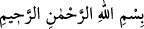
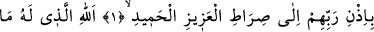
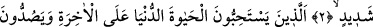
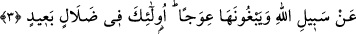

ÖYLE BİR KİTAP Kİ…
Rahman ve Rahîm olan Allah’ın adıyla.
1. Elif. Lâm. Râ. Bu, Rablerinin izniyle insanları karanlıklardan aydınlığa çıkarıp
O güçlü ve övgüye lâyık olan Allah’ın yoluna iletmen için sana indirdiğimiz bir
kitaptır.
2. O Allah ki göklerde ve yerde olanların hepsi O’nundur. Şiddetli azabdan dolayı
kâfirlerin vay hâline!
3. Onlar dünyâ hayâtını âhirete tercih ederler, insanları Allah’ın yolundan
alıkoyarlar ve onun eğrilmesini isterler. İşte onlar, büyük bir sapıklık içindedirler.
“Elif. Lâm. Râ.” Allah Teâlâ “Elif” ile nîmetlerine, “Lâm” ile lütuf ve keremine,
“Râ” ile de Kur’an’a yemine işâret etmektedir. Yâni, “nîmet ve ihsanlarıma yemin
ederim ki Kur’an lütuf ve kerem sıfatımın indirmemi gerekli kıldığı bir kitaptır...” et-
Te’vîlâtü’n-Necmiyye’de böyle geçmektedir.
Üftâde (k.s.) der ki: Sülûk ehli, mertebelerine göre müteşâbih âyetlerin mânâsını
bilirler. “Kaf” ve “Nûn” harfleri, Allah’ın varlık mülkünde tek mertebeye, “Hâ Mîm”
gibi harfler iki mertebeye, “Elif, Lâm, Mîm” ve “Elif, Lâm, Râ” gibi harfler üç
mertebeye, “Kâf, Hâ, Yâ, Ayn, Sâd” ve “Hâ, Mîm, Ayn, Sîn, Kaf” gibi harfler de beş
mertebeye işâret etmektedir. Bazı harflerde ise yedi mertebeye işâret vardır. Bu
bakımdan Hz. Peygamber (s.a.)’in: “Kur’an’ın bir zâhiri bir de bâtını vardır.”[1]
hadisini ancak sülûk ehli anlayabilir.
Ulemânın yaptığı açıklamalar, onun tahkîki değil, te’vîlidir. Kâdî Beydâvî ile el-
Keşşâf sâhibi gibilerin gittiği yol mânâ cihetinden değil, lâfız cihetindendir. Kâdî
Tefsiri (Envâru’t-Tenzîl)’inde rûhâniyyet varsa da bu et-Teysîr tefsîrinin ve el-
Manzûme adlı fıkıh eserinin yazarı, insanların ve cinlerin hocası Ömer Nesefî’nin
duâsı bereketiyle olmuştur.